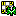
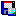
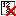
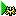

Most of these options are available from both the menu and the toolbar,
however, one or two are only available from the menu.
| File |
|
|
New Shows a sub-menu with
puzzle creation options. |
|
|
New Creates a new puzzle using the new puzzle
options configured via the menu option below. |
 |
New Puzzle Options Allows you to specify your preferences
for new puzzles, such as the difficulty, or solving techniques that they require and
the kind of symmetry. |
|
Simple Creates a new simple grade puzzle. |
|
Easy Creates a new easy grade puzzle. |
|
Mild Creates a new mild grade puzzle. |
|
Moderate Creates a new moderate grade puzzle. |
|
Hard Creates a new hard grade puzzle. |
|
Very Hard Creates a new very hard grade puzzle. |
|
Fiendish Creates a new fiendish grade puzzle. |
|
Diabolical Creates a new diabolical grade puzzle. |
|
Not Solved Creates a new not-solved grade puzzle. |
|
|
Clear Creates a new empty puzzle. |
|
Open Allows you to open a previously saved puzzle. |
|
Save Saves the puzzle. |
|
Save As Saves the puzzle with a new name. |
 |
Save as Image Saves the puzzle to an
image file. The image can be one of Portable Network Graphics (*.PNG),
Compuserve Graphics Interchange (*.GIF), Joint Photographics Group
(*.JPG) or Windows Bitmap (*.BMP) |
|
Print This will print the puzzle. |
|
Print Several Puzzles This options
allows for printing up to six puzzles from the library on a single page. Select the
grades of the puzzles from the dialog that opens. |
|
Print Several Puzzles from File This options
allows for printing up to six puzzles on a single page. Select the
puzzles from the Open Dialog, holding the control or shift keys to
select multiple puzzles. |
|
|
Printer Set-Up Shows the printer setup dialog. |
|
Exit Closes Sudoku. |
| |
|
| Edit |
|
|
Enter Clues This option allows you to enter and delete clue
numbers. These are the numbers entered by the person who set the puzzle. |
|
|
Enter Solution Numbers This option allows you to enter and delete your
solution numbers. |
|
|
Enter Pencil Marks This option allows you to toggle pencil-marks on and
off. These are used to show the "candidates" for the cell. |
|
 |
Delete All Pencil Marks Deletes any pencil marks. |
|
|
Copy to Clipboard Copy the puzzle to the clipboard. |
|
|
Copy Image to Clipboard Copies the puzzle
to the clipboard as an image. |
|
Paste from the Clipboard Paste the puzzle from the clipboard.
Sudoku will accept a wide variety of puzzle formats, so you should be
able to copy and paste from many other sources - such as web sites and
message forums. |
|
|
Puzzle Information This option allows
you to store additional information, such as author, description, source
etc, with the puzzle. |
|
Modify This option allows you to change
the appearance of the puzzle. You can rotate or reflect the layout, or
substitute different digits. See the Modify
Dialog. |
|
Undo Undoes the effects of the previous action. |
|
Redo Redoes the effect of an undone action. |
|
Full Reset Resets the puzzle to its unsolved state. It deletes all
entered numbers and pencil marks, leaving only the clues. It is disabled
if there are no clues, or no content other than clues. |
| |
|
| Action |
|
|
Solve It! Attempt to solve the puzzle. While Sudoku is solving
the puzzle, the
button will cancel the solve attempt. Note: the solver uses the
pencil marks when attempting to solve the puzzle. If a cell doesn't
contain any pencil marks, the solver will put them in, but if a cell does
contain any pencil marks, the solver will not check that they are
correct or complete, it will simply use them as they are. Incomplete
or incorrect pencil marks can prevent the solver from finding the
solution. If you think this is the case, reset ()
the puzzle or delete all pencil marks ()
then use the auto-pencil function ()
to completely initialise the pencil marks, before clicking the Solve
It button again. |
|
Single Step As above, but stops after
entering a single number. |
Note: Single and with ten-step functions are
disabled if the allowed solving techniques includes trial-and-error.
(Otherwise, the grid could be left in an incorrect state after the
allowed number of steps.) To use either of these functions, first
disable trial-and-error from the Actions -> Solving Techniques menu. |
|
Ten Steps As above, but stops after
entering ten numbers. |
|
Complete Naked Singles This
option causes any naked singles to be entered automatically. |
|
Complete Hidden Singles This
option causes any hidden singles to be entered automatically. |
|
|
Bookmark This option shows a sub-menu
with the bookmark options. Bookmarks allow you to save the current state of the board. You
can create a bookmark, try a particular solving route, and if it doesn't work out,
restore to the point when the bookmark was taken. You can create multiple bookmarks while solving.
Note: bookmarks are not saved to the Sudoku file, so if you close the Sudoku, any bookmarks will be lost.
|
|
|
|
Create Bookmark Creates a new bookmark with the current board state. Note:
this option will not create a new bookmark if it would be the same as the
previous one. |
|
|
Restore Bookmark Shows a sub-menu with each bookmark. Clicking any of these
sub-menu options will restore to the board state when the bookmark was created.
The solution log and undo stack are also restored. |
|
|
Delete All Bookmarks Deletes all bookmarks. |
|
 |
Solving Techniques These options allow
you to specify the techniques that may be used when auto-solving the puzzle. Note:
naked single and hidden single are the only techniques that actually put
numbers into the cells. The others techniques are only used to reduce
the number of candidates to the point where this is possible. |
| |
|
|
|
Count Solutions This will examine the puzzle and count how many solutions it has. Once the
solutions have been found, you have the option to see each one. Note:
This counts the number of solutions to the empty puzzle, not the number of
solutions from the current state, in other words, any solution numbers
you have already entered are ignored. This option is disabled if the puzzle does not contain any clues. |
|
Rate the Puzzle Provides an estimate of how hard the puzzle will be to solve. The rating
system is based on the type of techniques that are required to solve the puzzle; with more advanced techniques giving a harder rating. You may
find that many of the puzzles published in newspapers don't rate very high on this difficulty scale. The rating scale is:
simple, easy, mild, moderate, hard, very hard, fiendish and diabolical.
Note: This rates the empty puzzle, not the current state, in other
words, any solution numbers you have already entered are ignored. This option is disabled if the puzzle does not contain any clue numbers. |
|
|
Change All Numbers to Clues Changes any
entered numbers into clues. This option is only
displayed when the Enter Clue
option is selected, or when the grid doesn't contain any clues at all. |
|
|
Auto-Calculate Pencil Marks This button will cause all pencil marks to be updated
to reflect the effects of the numbers entered so far. It doesn't use any
advanced logic to determine the candidates, merely the immediate effects of
numbers already entered into the same row, column and block. If this
option is selected (the menu option is checked, or the toolbar button
is down) when you enter solution numbers, the pencil marks will be
automatically updated to reflect the effects of the number just entered. Caution:
If you have manually
adjusted the pencil marks, your changes will be lost if this option is
selected. |
|
|
Save Log to File This option
allows you save the solution log to file. It will be disabled if the log
is empty. |
|
|
Delete the Log Deletes the internal
solving log. Does not delete any logs previously saved to file. |
| |
|
| View |
|
|
|
Menu Shows or hides the menu bar.
Note:
if you hide the menu, you can re-show it by right-clicking on any
visible toolbar and selecting the menu option. |
|
|
Toolbar Shows or hides the toolbar. |
|
|
Effects Toolbar Shows or hides the effects toolbar. |
|
|
Highlight Toolbar Shows or hides the highlight toolbar. |
|
|
Counts Shows or hides the digit counts. |
|
|
Timer Shows or hides the timer. When the
timer is enabled, it can be temporarily paused using the Pause key. |
|
|
View the Solution Log This option will
display the solution log. It will be disabled if the log is empty, and the
log will remain empty until a automatic solve method is used. To enable
this option use one or more of the "Solve It", "Single Step", "Ten Steps", "Complete Naked Singles" or "Complete Hidden Singles"
functions. |
|
|
Colouring This option shows a sub-menu
with the colouring options: |
|
|
|
Colour 1 Colours the selected cell with user
colour 1. |
|
|
Colour 2 Colours the selected cell with user
colour 2. |
|
|
Colour 3 Colours the selected cell with user
colour 3. |
|
|
Colour 4 Colours the selected cell with user
colour 4. |
|
|
No Colour Removes the colouring from the
selected cell. |
|
|
Remove All Colours Removes all user colouring from
the cells. |
|
|
|
Show Pencil Marks
Shows or hides pencil marks. Does not delete them, and does not effect whether pencil marks
are kept up-to-date when the auto-calculate pencil marks option is enabled. If you want to hide
the pencil marks, simply unselect this option.
Entering or clearing any pencil mark will automatically select this option so the pencil marks
will be shown.
|
|
|
Highlight Incorrect Numbers
This option causes any incorrect numbers to be highlighted. It is not
available if the puzzle has no or multiple solutions. |
|
|
Library Statistics Shows some statistics
about the puzzles in the library. |
|
|
Options Shows the options dialog to allow you to set your
program preferences. |
|
|
|
|
Help |
|
|
|
Help Displays this help. This option is
disabled if this help file is not in the same folder as the
application. |
|
|
Hint Gives a hint about a
cell that can be filled or an elimination that can be made. Selecting
the option a second, and perhaps a third time will show a more
detailed hint if one is available. Note: the hint function uses the
user-defined colours to indicate the appropriate cells, so it will
remove any existing colours before displaying the hint. |
|
|
Enter Registration Key Allows you to enter your registration key. This option
is not shown once your registration details have been entered
successfully. |
|
|
System Information Copies system
information and the current configuration to the clipboard. |
|
|
About Shows the "about box" giving version and registration
information. |